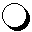
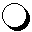
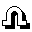
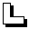
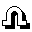
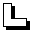
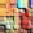
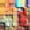

|
Különbözõ turistajelzések (COMBO) lerakása
 Jelzéstulajdonságok:
Illeszkedik rá:
Jelzéstulajdonságok:
Illeszkedik rá:
Egy COMBO, azaz  -val kezdett, tetszõleges különbözõ turistajelzésekbõl álló lapsorozat; ezen kívül
az aktuális színhez színben illeszkedõ lap (l. SzínSúgó),
másik -val kezdett, tetszõleges különbözõ turistajelzésekbõl álló lapsorozat; ezen kívül
az aktuális színhez színben illeszkedõ lap (l. SzínSúgó),
másik  vagy
vagy  jelzésû lap,
valamint jelzésû lap,
valamint  jelzésû lap,
ha a jelzéslap jelzése a felsoroltak közül való. jelzésû lap,
ha a jelzéslap jelzése a felsoroltak közül való.
|
Ha valakinek több különbözõ turistajelzése van (a szín nem számít), köztük is,
akkor egy ilyen jelzésû lap segítségével nem csak megszabadulhat tõlük, hanem számos elõnyben is részesül.
A COMBO lerakása úgy történik, hogy a -t követõen
kötelezõen egy -val kell kezdeni, majd a maradék hétfajta
(magyar) turistajelzésbõl ( , , , ,  , ,  , , , , , ,  ) lehet tenni egyet-egyet (a sorrend nem számít). Attól függõen, hogy hány különbözõ jelzés
szerepel, a COMBO lehet 1. szintû (-val együtt max. 4 féle), 2. szintû (legalább 5 féle) vagy 3. szintû (mind a 8 féle). ) lehet tenni egyet-egyet (a sorrend nem számít). Attól függõen, hogy hány különbözõ jelzés
szerepel, a COMBO lehet 1. szintû (-val együtt max. 4 féle), 2. szintû (legalább 5 féle) vagy 3. szintû (mind a 8 féle).
Mint minden extra sorozás esetén,  színû lapot nem lehet belerakni a COMBO-ba. színû lapot nem lehet belerakni a COMBO-ba.
A jelzés tulajdonságú, azaz egy ilyen kártya lerakása után közvetlenül rá lehet rakni egy COMBO-t, de ha a
kártyát lerakó játékos nem tesz rá semmit, a COMBO-lehetõség a következõ játékosra száll. Ez mindaddig így megy,
amíg a -kártya az aktuális (azaz nem raknak rá semmit). A következõ játékos természetesen nem kell hogy éljen
ezzel a lehetõséggel, egy más, színben v. jelzésben illeszkedõ lapot is tehet a -lapra.
Az egyik 'jutalom' a COMBO-t lerakó játékosnak az, hogy minden COMBO-beli turistajelzéses lap helyébe kap egy -et vagy
 -et; a kettõ közül véletlenszerûen. -et; a kettõ közül véletlenszerûen.
A másik jutalom pedig az, hogy a COMBO szintjétõl függõen az összes megmaradt kártyája színe átváltozik:
1.szint esetén  -re, 2.szint esetén -ra, 3.szint esetén -re, 2.szint esetén -ra, 3.szint esetén  -ra. -ra.
lerakásakor – mivel lila lap esetén abban a körben
már más nem rakható le – a következõ játékosé a COMBO-lerakási lehetõség.
|
|

 Bevezetõ |
Bevezetõ |
 Szabályok |
Szabályok |
 Súgó |
Súgó |
 Paklik
Paklik